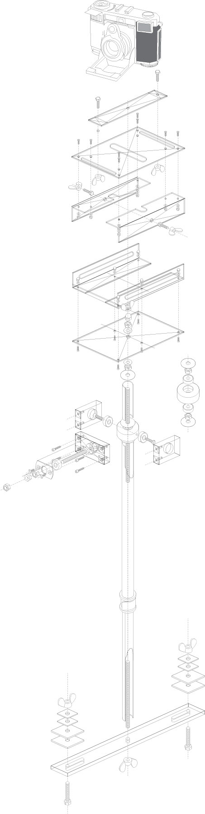
Voorwoord
Mijn naam is René Louter, ik ben student grafisch ontwerpen aan de Koninklijke Academie van Beeldende Kunsten in Den Haag.
Voor deze scriptie ben ik mij gaan verdiepen in de productie van muziekvideo's, met name in het camerawerk en de montage. Ik heb voor dit onderwerp gekozen omdat ik als grafisch ontwerper altijd direct met het visuele bezig ben. Waar grafisch ontwerpen in veel gevallen bij het stilstaande twee dimensionale vlak blijft, gaat video net iets verder. De dimensie van tijd, wat beweging is, is direct gekoppeld aan het medium. Het maken van een muziekvideo ofwel videoclip is een voor de kijker onzichtbaar ontwerp- en constructieproces. Het ontwerp van een video is in het eindresultaat onzichtbaar wanneer het goed gedaan is. Ik ben onderzoek gaan doen naar de opstelling van meerdere camera's, naar verschillende camerabewegingen en het maken van een geschikte montage voor verschillende soorten muziek. Voor het maken van deze scriptie wil ik de volgende personen bedanken; Marjan Brandsma, Michel Hoogervorst, Dirk Vis, Frits Deys, en alle docenten die mij door de jaren heen hebben begeleid. Ik wens de lezer veel plezier met het lezen van mijn scriptie en hoop dat ik met deze scriptie de lezers' kijk op het onderwerp muziekvideo kan verrijken. ¶
René Louter
www.louterdesign.com
23/01/2015
Introductie
Vier jaar geleden kreeg ik het idee om een affiche op te hangen op het Conservatorium van Den Haag. Ik wist dat ik als grafisch ontwerpen wel wat zou kunnen betekenen voor de muzikanten, met betrekking tot het maken van hun cd covers, posters, logo's of websites. Al snel kreeg ik opdrachten van verschillende muzikanten. In diezelfde tijd wilde ik graag meer met het medium film doen. Ik ben een leergierig persoon en houd ervan om verschillende disciplines te beheersen. Een logische volgende stap was een opname maken van een concert van één van de studenten. Ik had bedacht dat er minimaal twee camera's nodig zouden zijn om een live-opname te filmen, anders zou het een heel lang aaneengesloten en saai shot zijn. Toen besloot ik dus een tweede camera aan te schaffen. Op de link: https://www.youtube.com/watch?v=If7KXacHOcE is het resultaat te zien van mijn eerste live-concertopname. Hierdoor ben ik begonnen met het verkennen van concertfilms en live opnames en ben ik erachter gekomen dat het een complete wereld is, de wereld van de film en de illusie. Veelal wordt het kijken naar muziekvideo's als ontspannen bezigheid ervaren. De audio opname van de muziek is vaak het belangrijkste element van de video, het is de basis van de clip. Wat er in beeld gebracht wordt en de manier waarop dat gebeurt is waar deze scriptie over gaat. Het onderzoek beantwoord de volgende vraag: Welke camera-technieken versterken de beleving van een concertopname? Het eerste hoofdstuk geeft een definitie van beeld en geluid. Ik omschrijf waar het beeld uit bestaat en waar de muziek uit opgebouwd is, en hoe de twee elkaar beïnvloeden. En ook hoe dit het filmen beïnvloedt. Het tweede hoofdstuk beschrijft de oorsprong van de muziekvideo. Aan de hand van enkele voorbeelden wordt de relatief korte geschiedenis van de muziekvideo omschreven om de lezer beter te informeren. In het derde hoofdstuk ga ik dieper in op de menselijke perceptie, de werking van onze ogen, oogbewegingen, camera-bewegingen en filmcuts. De elementen die een belangrijke rol spelen in muziekvideo en de ontwikkelingen door de tijd heen en hoe deze gegevens van invloed zijn op het filmen. In het vierde hoofdstuk geef ik aan de hand van verschillende experimenten de resultaten van mijn bevindingen weer. Op de digitale versie van de scriptie en op de bijgesloten DVD kunnen de video's bekeken worden. Er komen verschillende elementen aan bod, zoals het opstellen van 2, 3, 4 of 5 camera's op verschillende posities en opnames met meerdere takes. En tevens het op een passende manier in beeld brengen van het onderwerp. Een rock band of een klassiek orkest bijvoorbeeld, komen op een andere manier in beeld. Het vijfde hoofdstuk gaat over de zelf ontworpen en zelf gemaakte apparaten. Het zesde hoofdstuk is de conclusie, waar het antwoord op de onderzoeksvraag wordt gegeven en wordt onderbouwd.Onderzoeksvraag: Hoe kunnen filmtechnieken de kijkers' perceptie van de muziek in een videoclip versterken?
#1 - De definitie van beeld en geluid synchronisatie
1.1 beeld
Om dit onderzoek te onderbouwen begin ik met een korte uitleg over de belangrijkste elementen waar muziekvideo volledig van afhankelijk is, dat wat we met onze zintuigen kunnen registreren zoals het beeld en het geluid. Ik begin met een korte uitleg over het licht, de constructie van de camera, het oog, en het beeld op een scherm.Licht
Licht bestaat uit elektromagnetische straling die waargenomen kan worden met het oog. De fysieke energie van licht wordt uitgedrukt in de golflengte van de straling. Het spectrum van golflengtes die de mens kan registreren is relatief klein, we noemen dit het 'visuele spectrum'. Het visuele spectrum is opgebouwd uit alle kleuren die wij kennen. [1] 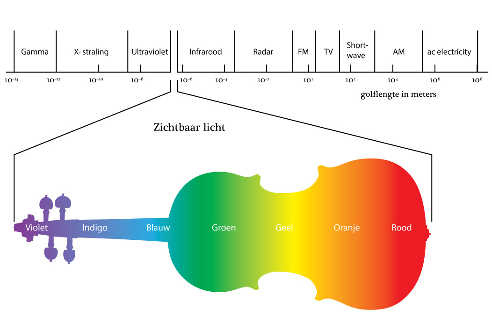De constructie van het oog
De opbouw van het oog bestaat grotendeels uit een mechanisme vergelijkbaar met dat van een camera. Het proces van de vertaling van het licht in het oog naar een visueel beeld in het brein is alleen veel gecompliceerder dan het proces van de camera. En daarbij kunnen er bij een camera gemakkelijk dingen verkeerd gaan, zoals de verkeerde lens, het afstellen van de lso-waarden en andere technische instellingen die nodig zijn voor het juist bedienen van de camera. Het proces waarmee het oog een object waarneemt en de hersenen het omzetten tot een beeld is vergelijkbaar met het processen van een computer. Er zijn veel verschillende gecompliceerde processen gelijktijdig werkzaam. [2] Bij een camera resulteert een tekort aan licht in een ruis of een grove korrel in het beeld, op de lichtgevoelige film of tegenwoordig in de digitaal fotografie op de CCD chip. Voordat de visuele informatie bij het brein aankomt heeft het al verschillende fasen van processing doorgemaakt. De belangrijkste plaats voor het processen van het beeld is de 'visuele cortex' in het brein. Ons brein maakt een verbeelding van de visuele informatie van onze omgeving. Een systeem voor bijvoorbeeld het zien van vorm, een systeem voor kleuren, een systeem voor beweging, diepte of perspectief. Voor het herkennen van objecten, gezichten en het organiseren en groeperen van de visuele informatie zijn er andere delen in het brein werkzaam. Dit staat in verband met het geheugen en onze ervaring.[3] 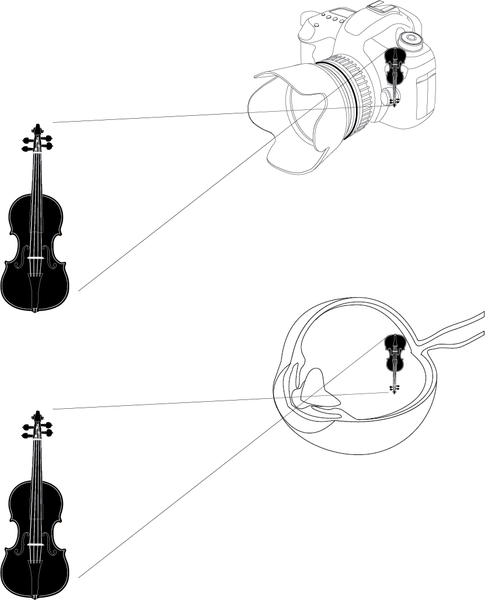Visuele muziek
Het maken van muziek brengt naast muzikale geluiden ook visuele informatie, zichtbare elementen zoals handgebaren, lichaamsbewegingen en emoties over. Tot in het eind van de 19e eeuw werd muziek direct ervaren in beeld en geluid, men bevond zich namelijk in de directe omgeving van de optredende muzikanten. Pas later, met de introductie van verschillende technologieën zoals radio en platenspeler, werd muziek volledig gescheiden van de directe visuele informatie van de performance. Deze heeft een impact op hoe we de muziek waarnemen en ervaren. Gezichtsuitdrukkingen en lichaamstaal van de performers geven informatie over de timing en aankondiging van de verschillende muzikale elementen. Het kan juist de aandacht ergens op richten of juist de aandacht ergens vandaan trekken. [4] Als cameraman is het dus erg belangrijk om de muziek goed te kennen, om te weten welke details er zullen komen en vanuit welke hoek deze het beste in beeld kunnen worden gebracht.Beeld op scherm
Een afbeelding op een scherm heeft als begrenzing de randen van het beeldscherm. Om een afbeelding op een scherm te zien is er een resolutie nodig van minimaal 72dpi (dots of pixels per inch). Tegenwoordig is die resolutie behoorlijk gestegen dankzij de introductie van de HD-schermen en HD-camera's. High Definition beeldschermen hebben een afmeting van 1920x1080 pixels en sinds kort is ook het retina scherm geïntroduceerd waarop bijna geen pixels meer te zien zijn met het blote oog. Als cameraman moet je er rekening mee houden dat het altijd 'landscape' gefilmd wordt, dus altijd een breed beeld. Het afspelen van de foto's heeft snelheid van 50, 29,7 of 25 frames per seconde (fps).1.2 Geluid
Geluid bestaat net als licht uit golven die zich voortbewegen door trilling van lucht. Dit gebeurt bij snel vibrerende objecten, zoals bijvoorbeeld een snaar van een instrument. De snelheid van de golf wordt beïnvloed door de luchtvochtigheid en de temperatuur van de lucht. Bij lucht met een temperatuur van 20°C is deze snelheid zo'n 343 meter per seconde (of 1234,8 km/u).Muziek
Om de muziek te bestuderen is het belangrijk de verschillende elementen te onderscheiden waaruit de muziek is opgebouwd. De muziek heeft een grote invloed op de manier van het in beeld brengen van een performance of optreden. Het gaat om de camera-bewegingen die op een passende manier aansluiten bij de muziek, bijvoorbeeld door het aantal montages per minuut. De melodie in de muziek is de lineaire of horizontale opbouw van de toonhoogte. Melodieën bestaan bijna altijd uit verschillende toonhoogtes welke worden aangegeven met de termen 'major' en 'minor'. Dit zijn de twee meest voorkomende toonsoorten in de westerse muziek. De kleurtoon van een geluid wordt gevormd door het instrument zelf. Een 'C' kan op de piano aangeslagen worden, maar diezelfde 'C' kan ook gezongen worden. Het is dezelfde toon maar de kwaliteit van het geluid, gemaakt door de snaar en hamer van een piano, verschilt sterk van het geluid dat door de stem gemaakt wordt. De toon wordt gevormd door een set karakteristieke patronen welke overtonen worden genoemd. Ieder instrument en elke stem heeft zijn eigen unieke klankkleur. Ritme is het tijdselement wat ook wel de 'beat' genoemd. Het ritme van de muziek wordt voor een belangrijk deel bepaald door de stiltes die tussen de noten vallen. Er worden verschillende tempi gebruikt, van Largo en Andante wat uiterst langzaam is, tot Allegro en Presto waarbij de muziek zeer snel uitgevoerd wordt. De dynamiek heeft te maken met het volume van de muziek. Er kan een laag volume of weinig geluid worden gebruikt wat pianissimo wordt genoemd, maar er kan ook met veel volume gespeeld worden wat fortissimo genoemd wordt. Andere termen zijn 'crescendo' waarbij het volume geleidelijk wordt verhoogd, en 'diminuendo' of 'descrendo' bij een geleidelijke afname van het volume. In het montageproces van een muziekvideo zijn bovengenoemde elementen zeer belangrijk met betrekking tot de wisselsnelheid en de duur van de shots. 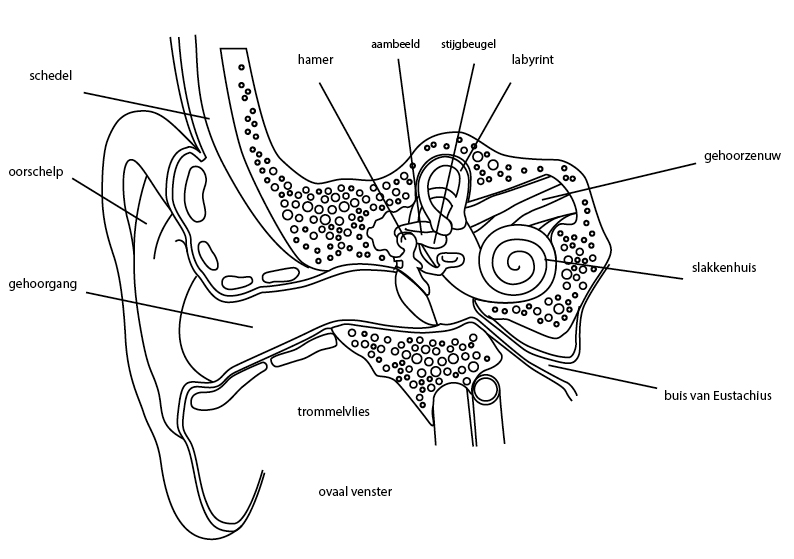 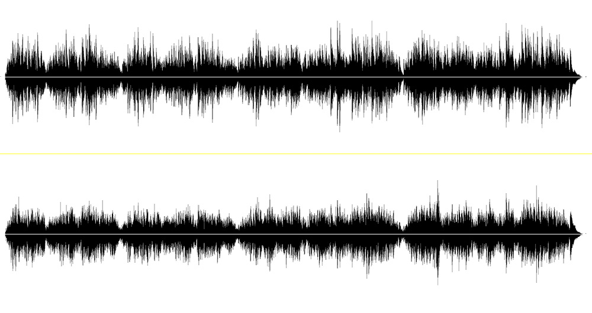1.3 – Hoe beeld en geluid elkaar beïnvloeden
Een visuele sensatie leidt tot een meer indrukwekkende perceptie van het geluid. De beeldinformatie bestaat uit vormen, kleuren en bewegingen. Een concert-video is de combinatie van camerawerk en montage welke bepalend zijn voor wat de kijker te zien krijgt. Dit betaat uit een portret van de artiest, een close-up van een instrument, een totaal-shot van de hele band of een shot van het publiek. Andere factoren zijn de snelheid van camera-bewegingen en hoe vaak en snel er in de film geknipt wordt. Het knippen van het beeld bedoel ik een overgang van het beeld van één camera naar de ander. Dit heet ook wel transitie. Dit gaat vaak samen met het genre, het ritme of de snelheid van de muziek. Als we van twee verschillende zintuigen, zoals oren en ogen een prikkel krijgen zal het brein altijd proberen een verbinding te leggen tussen de twee.#2 - De geschiedenis van muziekvideo
2.1 – de Oorsprong
Rond 1890 waren meerdere personen bezig met het ontwikkelen van filmcamera's. De broers Auguste en Louis Lumière hebben de eerste echte film in première gebracht, een film bestaande uit zeer lange shots gefilmd vanaf een tripod (statief). In eerste instantie werd de uitvinding niet gezien als iets dat commerciële waarde zou hebben. Er werd niet in geloofd en men dacht dat de kijker snel verveeld zou raken door het kijken naar een geprojecteerde afbeelding. Buiten konden ze tenslotte de realiteit zien 'the real thing'. Al snel werd duidelijk dat het nieuw ontdekte medium in staat was zijn publiek een andere werkelijkheid te laten beleven.
In 1902 mixte Edwin S. Porter ware beelden van de brandweer met geregisseerde en gedramatiseerde opgenomen beelden. Dit werd uitgevonden door simpelweg fragmenten vanuit verschillende momenten in de tijd en verschillende locaties te monteren tot een stuk film. Film en televisie (the moving image) is het medium van de 20ste eeuw. Met zijn mogelijkheid de werkelijkheid te documenteren en te manipuleren. Dankzij de film is er een hele nieuwe wereld ontstaan. Zodoende begon men later scènes te maken waarbinnen de camera positie zich d.m.v. een transities verplaatst. De kijker van de film maakt zelf de link met de plotse linge verplaatsing van de camera. De camera is het oog van de kijker.
2.2 Vroege voorbeelden
In 1895 werd de eerste muziekvideo opgenomen in Thomas Edisons' Studio. Het werd gemaakt voor een Kinetophone. Een apparaat ontwikkeld in het lab van Thomas Edison kon moving images afspelen en was tevens uitgerust met een phonograph, voor het produceren en vastleggen van geluid. De uitvinder van het apparaat is William Kennedy Dickson. De opname bestaat uit een kort stuk video met Dickson zelf spelend op de viool en ernaast twee dansende mannen. Deze film is getiteld "Dickson Experimental Sound Film"1925 Het publiek leren hoe de stuiterende bal te volgen. Een jaar na hun geanimeerde sound-on-film serie getiteld "Song-Car Tunes" debuteerde de broers Max en David Fleischer met een cartoon van een stuiterende bal, die sprong over teksten – Deze bal moedigde aan tot meezingen in het theater. Andere voorbeelden van muziek-video zijn Oskar Fischinger, hij noemde het 'visual music'. Zijn werk bestond uit veel verschillende technieken, het handmatig maken van frames en deze snel achter elkaar afspelen.
1940 Disney produceerde de film 'Fantasia' Een animatiefilm op verschillende beroemde klassieke stukken muziek. Andere bekende animaties op muziek zijn de bekende 'Silly Symponies' en Warner Brothers' 'Looney Tunes', ook op klassieke muziek.
1959 The Big Bopper introduceert de term 'muziekvideo'. Volgens sommige muziek historici is zanger en songwriter Jiles Perry Richardson, die bekend stond als The Big Bopper, de eerste persoon die de uitdrukking 'muziekvideo' gebruikt in 1959 in een interview met een Brits magazine.
1960 The Beatles benutten de kracht van de film om hun platen op de markt te zetten en zich te uiten als visueel kunstenaars. Naast de hoofdrol in full-length videoclips zoals 'Help' en 'A Hard Day's Night' namen de Fab Four tientallen promotionele clips op, sommige in verhalende vorm en andere bestonden grotendeels uit psychedelische beelden. Veel rock en roll bands uit de 60-er en 70-er jaren volgden hun voorbeeld.
1974 Australië's 'Countdown' en 'Sounds'. Deze twee tiener–georiënteerde muziekprogramma's gingen in 1974 in Australië in première. Beide vertoonde voornamelijk videoclips. De shows hadden al snel een trouwe aanhang, het format breidde zich snel uit naar andere landen wereldwijd.
2.3 – tweedeling
Om bands en groepen te promoten werden optredens gefilmd en gemonteerd tot muziekvideo's. Het doel van de muziekvideo is het verkopen van de muziek en het laten oplopen van de verkoopcijfers. De videoclips zoals we die vandaag kennen zijn korte films met muziek als basis. Deze vorm is ontstaan in het jaar 1979, doordat de televisie zender MTV (Music Television) als pionier de clip van The Buggles' 'Video Killed The Radio Star' uitzond. Een zender met als hoofdingrediënt videoclips, gepresenteerd door een VJ, een Video–Jocky. De video's werden benoemd met termen als 'illustrated song', 'filmed insert', 'song video', 'rock video' en 'promotional clip'. Het zijn video's waar een verhaal mee uitgebeeld wordt of verschillende scènes die aansluiten bij de muziek of tekst van het lied. Muziekvideo's zijn op te delen in twee hoofdgroepen. De eerste is een performance clip, waarin de artiesten in beeld zijn. De performance clip kan geregisseerd opgenomen worden of als live-concert op het podium. De tweede groep is de conceptuele clip. De muziek wordt dan op een creatieve manier vertaald in beeld aansluitende bij het verhaal of bij de tekst van de muziek. Voor veel videoclips wordt een mix gebruikt van de twee. Dan worden de twee afwisselend afgespeeld. Een conceptueel verhaal met tussendoor shots van de performers.3.1 – Oogbewegingen; werking en functie
Onze ogen zijn constant in beweging, zelfs als de ogen gefocust zijn op een object. Deze oogbewegingen bestaan uit korte fixaties en zijn nodig om een beeld van iets te creëren in onze hersenen. Er zijn verschillende oogbewegingen waar we ons niet bewust van zijn. De wereld waarin we leven verandert constant en is altijd in beweging, daardoor is het zenuwstelsel zo geëvolueerd dat we verandering in onze omgeving kunnen registreren. Stilstaande niet-bewegende objecten zijn minder bepalend voor de verandering van de omgeving. Door het aanpassingsmechanisme van onze oogzenuw worden niet-bewegende objecten als minder belangrijk beschouwd. De ogen richten zich op het bewegende. Voor muziekvideo is dit een belangrijk gegeven. De oogbewegingen bij mensen zijn te verdelen in drie basis groepen; tremor, drifts en saccades. Tremor zijn de allerkleinste oogbewegingen. Een trilling of golf-achtige beweging van het oog tijdens de fixatie op één punt. De beweging is te klein en te snel om zelf waar te kunnen nemen, en wordt niet door ons ervaren. Drifts zijn de trage bewegingen van het oog, verplaatsend over het object dat waargenomen wordt. Microsaccades of fixatie saccades zijn schok-achtige bewegingen, verplaatsend over het waargenomen object. De waarnemer is zich hier vaak niet van bewust. Convergentie. Convergentie is een beweging van beide ogen ten opzichte van elkaar die garandeert dat een voorwerp wordt geregistreerd door beide ogen wanneer de afstand van de waarnemer wordt veranderd. Hoe dichter het object is, hoe meer de ogen naar elkaar richten. Bij het kijken van film wordt deze manier van oogbewegingen afgesteld op één afstand. Namelijk die van de ogen naar het beeldscherm. Achtervolging beweging De achtervolging beweging is een veel gladdere, langzamere bewegen dan een saccade, het fungeert om een bewegend object in het centrum van het netvlies te houden. Het kan niet vrijwillig worden geactiveerd, maar vereist een bewegend object in het gezichtsveld. In het maken van film kan dit geactiveerd worden door een soepele beweging met de camera te maken, waardoor het fixatie-punt binnen de kaders van het beeldscherm zich verplaatst. Nystagmus Nystagmus beweging is een patroon van oogbewegingen dat optreed als reactie op het draaien van het hoofd of het bekijken van een bewegend, herhalend patroon (het trein-raam fenomeen). Het bestaat uit gladde, achtervolgingsbewegingen in de richting van de scène, gevolgd door een snelle beweging in de tegenovergestelde richting tot een nieuw fixatie punt.
3.2 – Oogbewegingen tijdens kijken naar scènes
Bij het waarnemen van een scène gebruiken we oogbewegingen, uit onderzoek is gebleken dat de fixaties van de ogen bij het kijken naar een scène te maken heeft met de informatieve waarde van een regio. De fixaties clusteren zich rondom de informatieve regio's van een scène. Dit kan het effect zijn van visuele factoren, zoals beweging of verandering in de scène. Maar ook worden de fixaties van de ogen beïnvloed door de semantische waarde (de betekenis van het beeld). Daarmee wordt de interesse van de waarnemer aangegeven, of hij iets aantrekkelijk vinden of niet. En daarnaast is er de visuele waarde. Deze bestaat uit beeldelementen als contrast, kleur, beweging, perspectief en andere zichtbare factoren. De informatieve waarde van een object is dus subjectief en per persoon verschillend. Een vrouw zal misschien meer fixaties op de viool en handen hebben, een man die dezelfde scène bekijkt zal meer fixaties op de vrouw hebben i.p.v. op de viool.Formaat van de scène
Het formaat heeft een invloed op de oogbewegingen, en daarmee op de perceptie van de scène. Het formaat is bepalend voor de afstand tussen de informatieve regio's van de scène. Er zijn meer saccades nodig voor een grotere scène. Op een bioscoopscherm zijn de informatieve regio's van de scène zo ver uit elkaar, dat er zelfs nek-beweging aan te pas moet komen, in tegenstelling tot een scène die bekeken wordt op een Iphone of Ipad.Kijk opdracht
Verschillende onderzoeken zijn gedaan waarbij gebruik gemaakt werd van een 'kijk opdracht'. De kijker kreeg de opdracht scènes te bekijken en zich voor te bereiden op een geheugentest. Verder kregen ze een zoekopdracht, om een bepaald object te lokaliseren in een scène. Beide opdrachten leidden tot verschillend gedrag van de oogbewegingen. Verschillend van aantal saccades en verschillend in lengte van de fixaties.Tijd per scène
Een andere bepalende factor voor de oogbewegingen is de tijdsduur van een bekeken scène. In de scène wordt op de regio's met een hoge semantisch of visueel informatieve waarde langer naar deze regio's gekeken. Er is geen standaard te handhaven of geen eenduidig resultaat uit verschillende onderzoeken naar boven gekomen over de juiste lengte van het vertonen van een scène. Semantische waarden en visuele waarden die aan een regio worden toegekent zijn per persoon verschillend. Als een scène vertoond wordt met een vooraf aangegeven tijdsduur van bijvoorbeeld 10 seconden heeft dit ook invloed op de oogbewegingen.De ogen kiezen na 1 tot 3 saccades een fixatie regio in een scène. De tijdsduur van de fixaties wordt bepaald door de tijd die nodig is voor het verwerken van de perceptie van de regio. (Meestal enkele micro seconden). Wanneer het verwerken van de informatie voltooid is zal de informatieve waarde van deze regio dalen en krijgt een andere regio de hoogste informatieve waarde. De ogen worden dan aangestuurd in de richting van deze regio.
Het is bekend dat de ogen meerdere fixaties clusteren op de informatieve regio's van een scène. De complexiteit van een scène en het aantal informatieve regio's kan ver uit één lopen. Extreme close-ups bevatten over het algemeen weinig fixatie-punten. Totaal shots, two- of three-shots bevatten vaak veel fixatie-punten. De lengte waarin een shot of scène wordt vertoond word in vele gevallen bepaald door het tempo en het genre van de muziek. De montage van een klassieke muziek voorstelling bevat vaak langere shots en minder camera wisselingen dan een rockconcert, waar veel verschillende shots soms zelfs maar een fracties van seconde duren.
3.3 – het verwerken van filmcuts
Het kijken van een film wordt over het algemeen ervaren als een leuke en ontspannen bezigheid. We ervaren het niet alsof er veel processen in ons hoofd gaande zijn. Ondanks het aantal transities wordt film toch ervaren als een doorlopend verhaal. Onder filmmakers speelt een debat over het monteren van film, over in hoeverre de transitie verstorend zou zijn voor de perceptie. Het oude bekende 'Hollywood' concept van film is het aantal transitie tot een minimum te beperken en vooral lange aaneengesloten shots te gbruiken. De reden waarom het zou verstoren heeft te maken met de herorganisatie van de scène, de veranderende achtergrond en de veranderde compositie van de muzikanten in de video. Transities kunnen de perceptie beïnvloeden, niet voelbare transities zijn beeld-overgangen die de kijker niet of nauwelijks opmerkt.
Transities worden gemaakt om verschillende redenen. Op de eerste plaats praktische redenen, om de kijker mee te nemen naar een andere tijd of locatie. Of om het in beeld houden van een zich verplaatsend persoon. Verder zijn er dramatische redenen; iets anders in beeld brengen, bijvoorbeeld het publiek i.p.v. de artiest. Ten derde zijn er vorm-redenen; zoals beeld-verversing, (niet te lang hetzelfde beeld) en een persoonlijke stijl (bijvoorbeeld een montage met duidelijk voelbare transities of een tempo-montage).
In het montageproces wordt besloten waar een transitie plaats zal vinden. Er zijn een aantal regels die opgaan voor het maken van niet-voelbare transities tijdens het monteren van film. Het snijden van de film kan op momenten wanneer er geen beweging in beeld is, dit geeft rust. Aan de andere kant zal de transitie in een stil beeld wel meer opvallen aangezien de beeldverandering de stilte verstoort. Transities worden ook gemaakt tijdens bewegingen, hierdoor valt een beeld-overgang minder op voor de kijker en kan in sommige gevallen de transitie de beweging zelfs versterken of soepeler doen overkomen. De timing van de transitie is belangrijk en heeft invloed op de perceptie.
Film kan worden verdeeld in continue en niet-continue. Een niet-continue film kan omschreven worden als een reeks diverse fragmenten die elkaar afwisselen, vanwege het feit dat ze op een ander tijdstip of andere plaats zijn opgenomen. Dit is altijd het geval bij documentaires. In het ene shot is het avond en in het volgende shot, na een transitie is opeens middag. De continue film wordt ervaren als één tijdlijn. Scènes sluiten op elkaar aan en je ervaard het als een doorlopend stuk. Het zijn beeldfragmenten van hetzelfde onderwerp waarin de scènes verschillen door de verschillende posities van de opgestelde camera's. Dit is bij live-muziekvideo's vaak het geval. De muziekvideo's waarop de muzikanten te zien zijn die hun performance geven. Bij muziekvideo's wordt veelal de illusie gewekt dat alles werkelijk gespeeld wordt op datzelfde moment. Maar dit is alleen het geval bij live concertopnames. Dan zijn er meerdere camera's opgesteld die continue draaien en de gehele performance vastleggen. Bij een studio-opname wordt er gebruik gemaakt van meerdere 'takes', die samen uiteindelijk de illusie wekken dat het continue opgenomen is en er met meerdere camera's is gefilmd. Terwijl dit heel goed met één camera gedaan kan zijn. [5]
3.4 – camera-bewegingen
Naast beweging van het object is ook de beweging van de camera. Het aantal bewegingen is eindeloos groot en ruimtelijk. De camera kan iedere beweging maken die je kunt bedenken. De algemene bewegingen zijn horizontaal, verticaal en draaiend om de as in alle richtingen.Handheld
Het in de hand houden van de camera of direct op de schouder plaatsen van de camera. Het is erg flexibel en je kunt gemakkelijk en snel bewegingen maken. Het effect kan soms schokkerig overkomen. Voor documentaires wordt dit veel gebruikt. Ook door de filmmaker Lars van Trier werdt deze manier van filmen gebruikt en tevens door filmmakers aangesloten bij de Deense Dogma stroming.Pan
De pan is een camera-beweging waarbij de camera op een statief staat en van links naar recht of van rechts naar links draait. De zip-pan is een variant hiervan. Dit is een snelle beweging waarbij er bewegings-onscherpte in het beeld ontstaat, waarin de transitie plaatsvind. Het eerste shot van na de transitie bevat dezelfde bewegings-onscherpte maar dan komt de camera tot stilstand, tot een scherp beeld.Tilt
De tilt is een beweging waarbij de camera over de verticale as beweegt. De beweging is te maken met een camera-kraan of camera-jib. Het is een menselijk onrealistische verandering van perspectief, doordat we bijna nooit op deze manier het perspectief zien veranderen. Tenzij we bijvoorbeeld in een glazen lift staan, of in een kermis atractie zitten.Dutch tilt
De Dutchtilt is het scheef houden van de camera.Roll
Het roteren van de camera over zijn eigen as en het object in het midden van het beeld houden.Zoomen
Het vergroten of verkleinen van het kader. In de 'bed designs' video voor Luxehoofdborden.nl bedden heb ik veel verschillende bewegingen gebruikt, ze zijn aangegeven met de witte letters. Bij deze video is het object een stilstaand beeld, maar door camera-bewegingen is het object toch op een zeer dynamische wijze in beeld gebracht. Bekijk de video hieronder.4.1 – experiment 1
Pop concert – 2 camera's – Live (met publiek) Robin Brock – Live at North Sea Jazz (2010). Een experimentele video van een live voorstelling, met publiek, gemaakt met 2 camera's. Camera 1 is opgesteld op een statief, in dit geval, gemonteerd aan het plafond. Dit is het totaalshot van de band, een referentie shot. Camera 2 is een handheld camera die zich beweegt over het gestreepte gedeelte, zoals aangegeven op de illustratie. Met deze camera worden de close-ups en verschillende camera-bewegingen gemaakt. De transitie mogelijkheden zijn klein, enkel een switch is mogelijk van camera 1 naar camera 2 en van 2 naar 1. Deze video toont een grote beperktheid door het minimale aantal camera's. Doordat er slechts twee camera's zijn gebruikt geeft de video duidelijk het gevoel van een opname en dus de aanwezigheid van de cameraman. Er wordt op het totaal-shot continue hetzelfde beeld getoond, waardoor de kijker snel visueel verveeld zal raken. Er ontbreekt bij deze video een derde of vierde camera. "A film cannot rely on only repetitions. AAAAAAA is reather boring. There must also be some changes [...]" 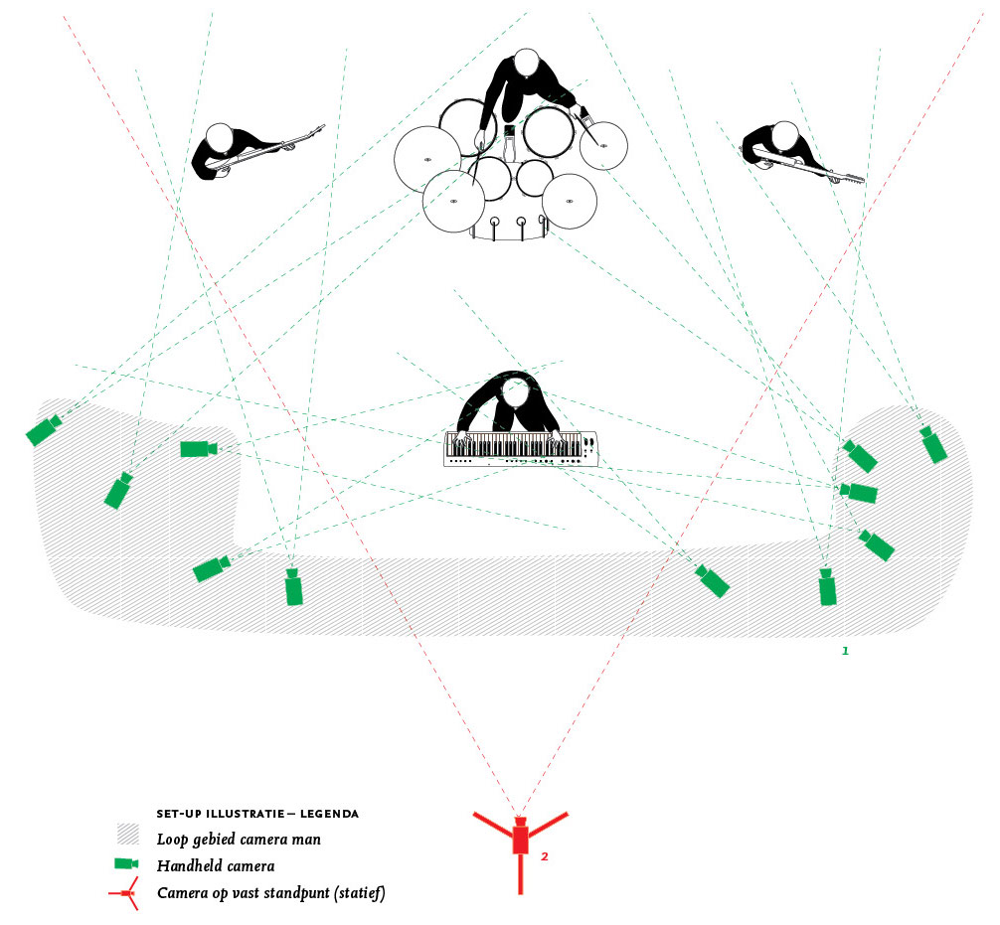 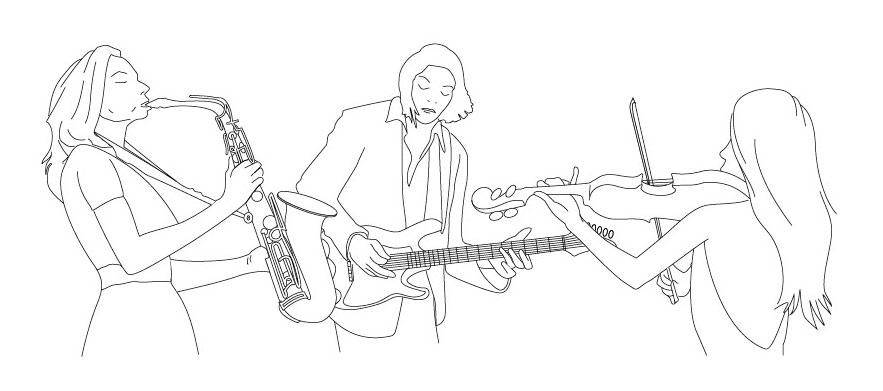 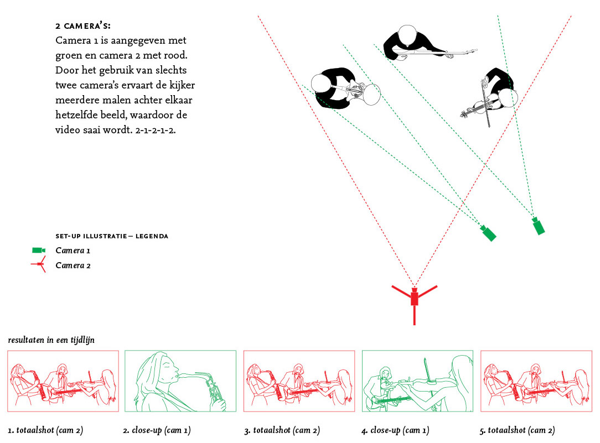 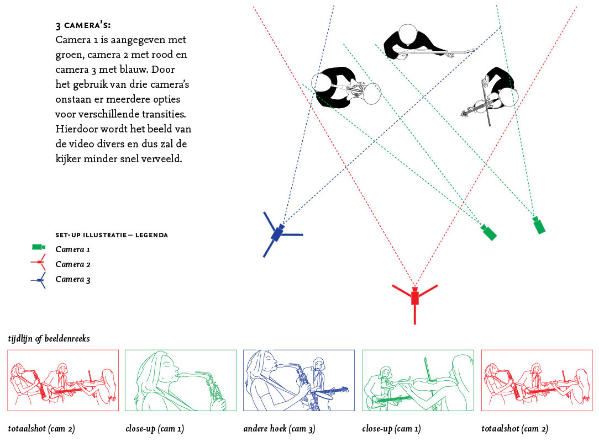4.2 – Experiment 2
Funk concert – 4 camera's + 2e cameraman De concert video van 'The Jamal Thomas band' is een opname met 4 camera's, waarvan 2 handheld bediend worden, één door Kim Lampe en één door mij. Deze oplossing heeft als resultaat een dynamische video. Veel close-ups en veel bewegingen van de performers zijn vanuit tal van hoeken in beeld gebracht. Enkele publiek-shots maken de video nog levendiger voor de kijker. De kijker kan zich op deze manier gemakkelijker verplaatsen in de bezoeker van het optreden. Er is voldoende detail en verscheidenheid in beeld, waardoor de kijker constant geprikkeld wordt, waardoor hij/zij naar het beeld blijft kijken. De camera-bewegingen zijn soms snel en vol beweging als dat bij de muziek aansluit. Soms wordt een transitie gemaakt in een camera-beweging, maar meestal is er geen camera-beweging als er een transitie gemaakt word. Als de muziek rustig of langzaam is, zijn de camera-bewegingen dat ook. Een geschikte transitie, of film-cut kan dan wellicht een cross-fade zijn. onderzoeksresultaten Om diversiteit in beeld te hebben zonder veel dezelfde beelden te herhalen is het zeer handig om nauw samen te werken met een tweede cameraman. Het werken met een tweede cameraman levert een grote diversiteit in beeld op, waardoor de kijker van de video constand geprikkeld wordt.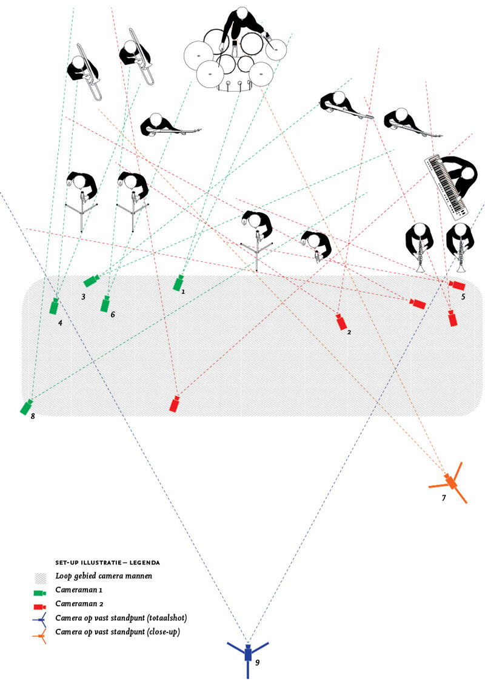
4.3 – Experiment 3
Klassiek concert – 4 camera's – 2 takes + repetitie (2012)
Een klassiek stuk, de Joseph Haydn – No. 92 in G Major "Oxford" Hob 1/92. Dit stuk werd gespeeld onder leiding van dirigent Mark Dupere. Een concert dat gespeeld werd zonder publiek. De leden van het orkest verzamelden zich in een kerk in Den Haag. De ochtend werd gebruikt voor repetities, de middag voor het spelen van de 4 delen van het stuk. Dankzij het feit dat er geen publiek bij was, was er de mogelijkheid om veel film materiaal op te nemen van zowel repetitie als het optreden. Ieder deel werd twee maal gespeeld door het orkest. De tussentijdse verandering in de camera set-up bood veel opties om het orkest van veel verschillende hoeken in beeld te brengen, waardoor bij de uiteindelijke video bijna alle muzikale details in beeld zijn. Een goede afwisseling van shots is het resultaat, met veel close-ups en details. Op de afbeeldingen zijn de opstellingen te zien die voor de diversiteit in het beeld gezorgd hebben. onderzoeksresultaten Om diversiteit in beeld te hebben zonder veel dezelfde beelden te herhalen is het in het geval van klassieke muziek mogelijk om meerdere takes op te nemen. Op deze wijze creeër je op eigen wijze de illussie van een tweede of zelfs derde cameraman. Er komt een grotere diversiteit in beeld, waardoor de kijker wederom voldoende geprikkeld zal blijven. 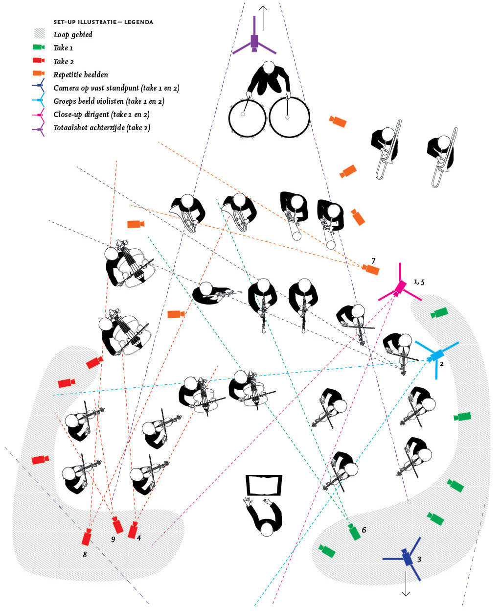 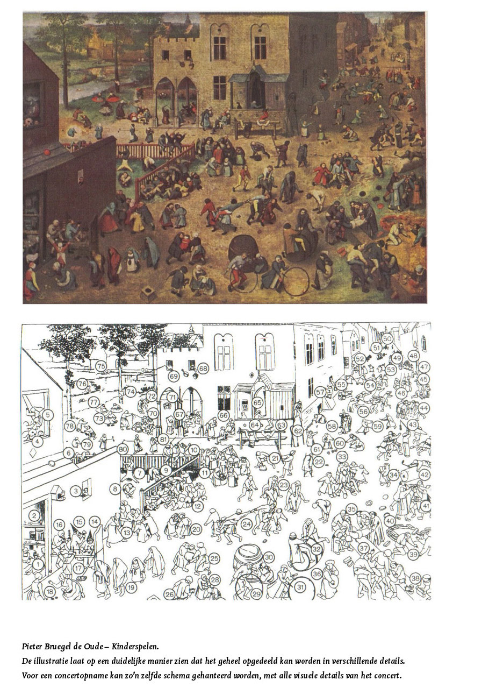 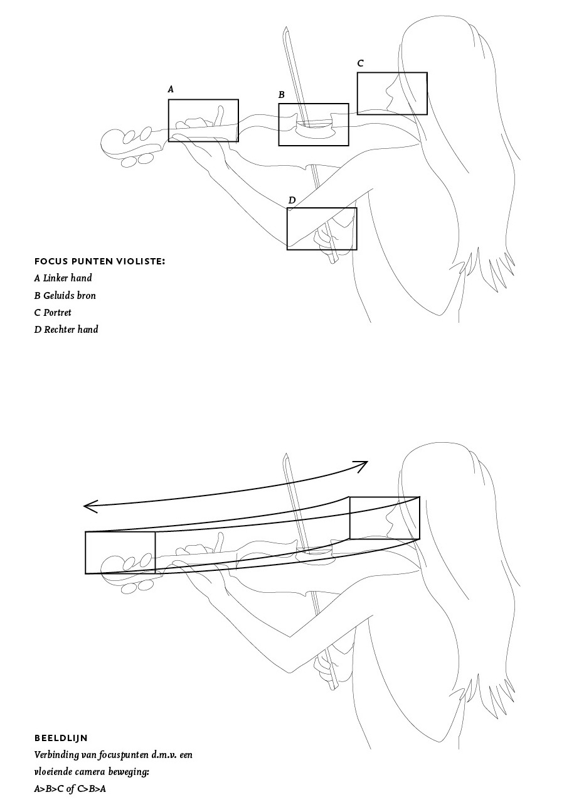 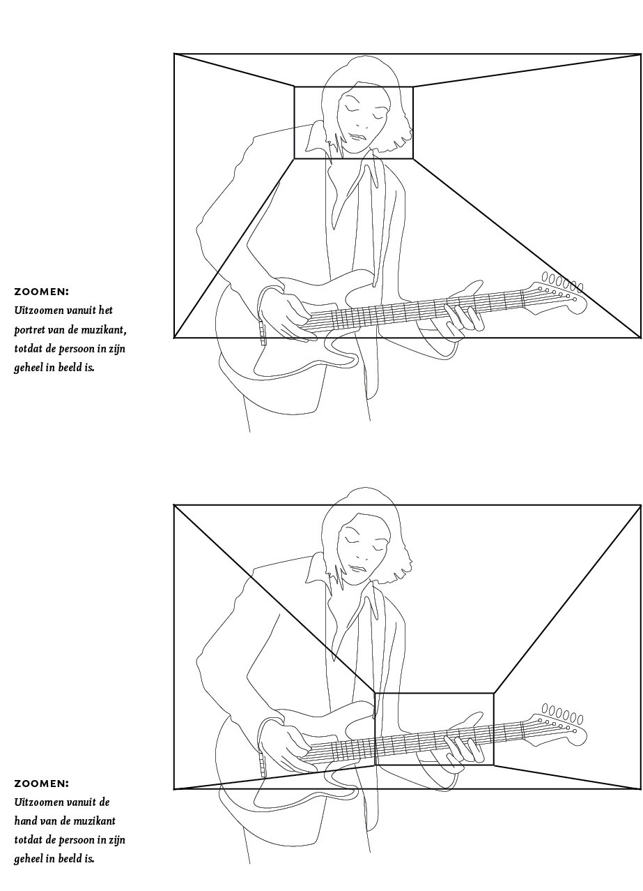 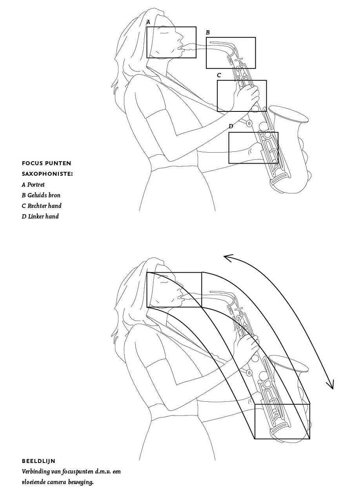4.4 – Experiment 4
Klassiek Piano Solo – 4 camera's + kraan
Bij het solo-pianoconcert van Daniël van der Hoeven wordt gebruik gemaakt van 4 camera's waarvan één gemonteerd is op de camerakraan, één is opgesteld op een statief en met de hand wordt bediend. De andere twee camera's zijn opgesteld op vaste positities. Het effect van de camerakraan is anders dan ieder ander apparaat (Zie hoofdstuk 5 voor meer informatie over de kraan). Het is een concert van kleine schaal. Eén soloist achter een piano. Veel informatie is er niet voor het filmen, het blijft bij de handen, het portret, de piano, details van de kamer en het totale plaatje. onderzoeksresultaten Door twee camera's gelijktijdig te bedienen, in dit geval de camerakraan en een camera op een statief, wordt de illusie gewekt dat er meerdere cameramannen tegelijkertijd aan het werk zijn. Het is mogelijk om twee camera's tegelijkertijd te bedienen als de camera's binnen handbereik van elkaar gepositioneerd zijn. Op het scherm zal in de definitieve video altijd het beeld van maar één camera te zien zijn. Waardoor planning en een nauw samenspel van de gebruikte camera's noodzakelijk is. 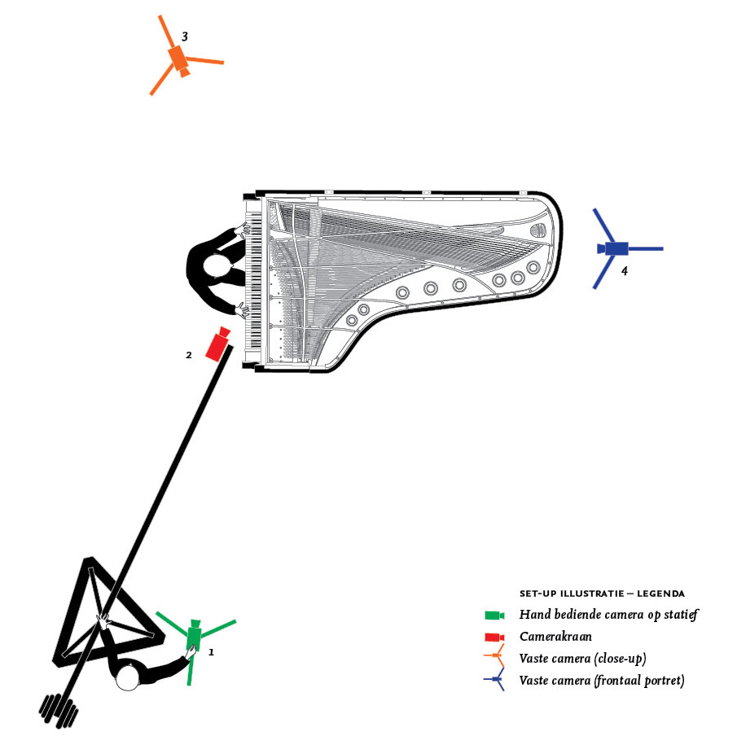4.5 – Experiment 5
Klassiek Barok Improvisatie - 5 camera's + steadycam Een concert van het Barok ensemble 'The Scroll Ensemble' opgenomen in het Eschermuseum in Den Haag. Het ensemble maakte muziek op basis van improvisatie. De muzikanten kijken en luisteren aandachtig naar elkaar tijdens het maken van de muziek, zonder bladmuziek of vooraf ingestudeerd. Ieder deel werd een aantal malen gespeeld. Maar iedere keer was de muziek anders. Voor deze video is geprobeerd lange shots te maken, om zo weinig mogelijk transities te gebruiken om een vloeiend beeld te creëren. 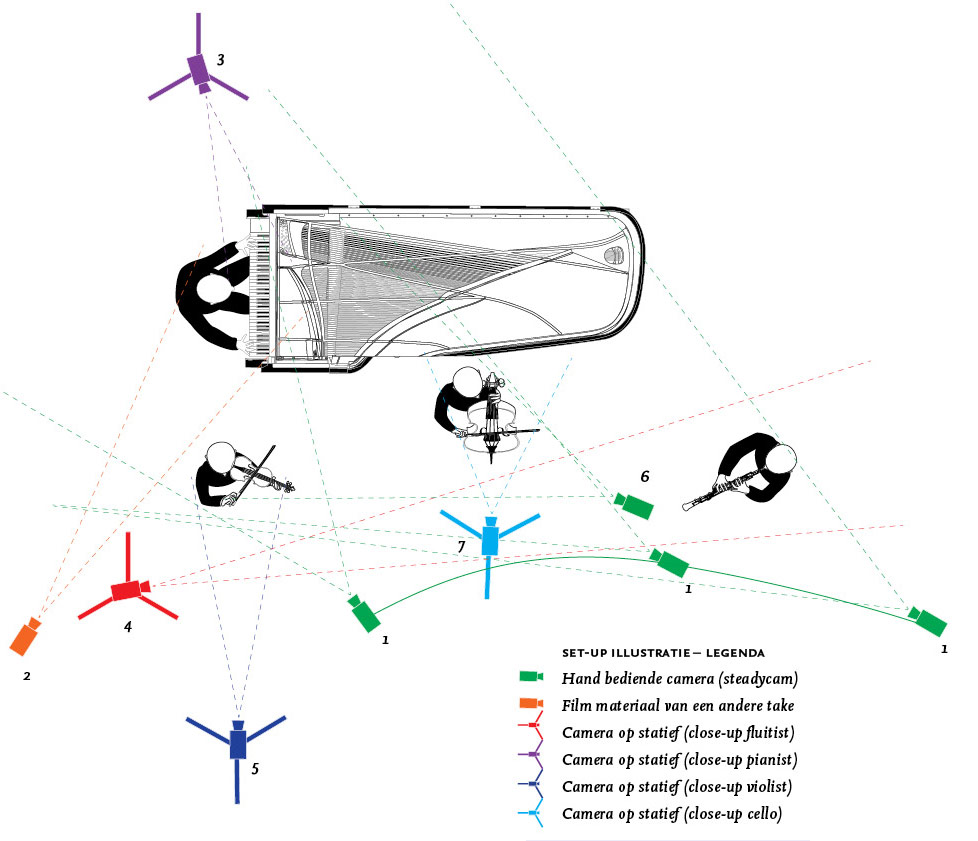4.6 – Experiment 6
Hardrock concert – 4 camera's + steadycam
Een video die duidelijk in de in hoofdstuk 3 besproken tweedeling van video's past. Er worden live-concert beelden gebruikt afgewisseld met niet-live beelden, in dit geval een introductie van de band. De camera-bewegingen en de montage van de clip is snel en vol beweging. Dit is passend bij het genre van de muziek. De rockmuziek die gepeeld wordt vertoond veel herhalingen, zo wordt er per gespeeld nummer bijvoorbeeld meerdere malen een refrein herhaald. Dit geeft de mogelijkheid om binnen één nummer het refrein eenmaal vanuit de rechterkant van het podium te filmen, en de tweede keer het refrein vanuit links te filmen. Hierdoor kan er in de montage de illusie gewekt worden dat het concert door meerdere cameramensen in beeld gebracht is. In realiteit was er bij dit concert nauwelijks publiek aanwezig, maar dankzij de band die de avond ervoor optrad, en waar wel veel dansend publiek was, konden de beelden van dat concert gebruikt worden om de video toch interessant te maken.onderzoeksresultaten
In deze video is een promotie video voor de band. Er worden voornamelijk maar korte stukjes muziek laten zien met tussendoor de introductie van de bandleden, zoals Baby Darling en Brett Wildman. Doordat het genre van de muziek wild is is er voor gekozen om een drukke compilatie te maken met een hoog aantal shots per minuut. Veel dansend publiek afgewisseld met korte fragmenten van het optreden. Zo kort in beeld gebracht dat de kijker niet kan zien of het werkelijk de noten zijn die gespeeld worden. 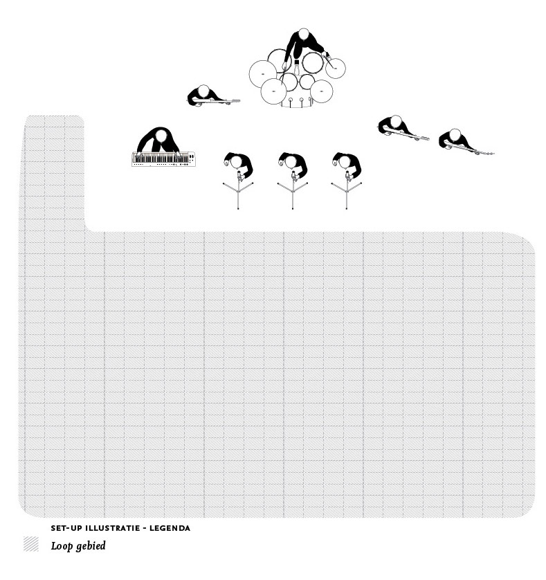5.1 – camerakraan (camera jib)
Een camerakraan of jib is een groot apparaat dat de mogelijkheid bied om vanaf 10 cm boven de grond tot wel 4,5 meter hoogte te filmen. Het apparaat is opgebouwd uit een tripod op een rijdende constructie met daarop een 4 meter lange, beweegbare arm. Met verschillende scharnieren en koppelingen en een handvat waar de camera zowel vóór- als achterover gekanteld kan worden. Ook is het mogelijk om de arm 360 om zijn as te draaien. De camera kan veel verschillende bewegingen maken om dynamische beelden te filmen. Veel verschillende effecten of bewegingen zijn uitsluitend met de jib te bereiken en door geen enkel ander apparaat. Door de hoogte te veranderen veranderd het perspectief. Het kan van kikvos- naar vogelperspectief en visa versa in één vloeiende beweging. Ook kunnen er gemakkelijk een pan- of tilt-beweging mee gemaakt worden. In het begin van het inzetten van de camerakraan werd het als iets heel unieks ervaren. Een onrealistische manier van kijken. Het is voor het menselijk lichaam en het oog niet mogelijk on dit soort perspectivisch vertekenend beeld aan ons netvlies voorbij te laten komen, mits we in een lift staan met een glazen deur, of we in een kermisattractie zitten. De vertekening van het perspectief is tegenwoordig niets nieuws meer. We hebben vaak niet meer in de gaten dat er gebruik gemaakt wordt van camera-beweging met een kraan. We beschouwden het als normaal en het heeft alleen de werking om het verhaal van de film te versterken of interessanter te maken om naar te kijken. Een jib wordt ingezet, met als bekendste voorbeeld het eind-shot van de film. Waar de camera langzaam in hoogte toeneemt en afstand doet van het verhaal. In de film 'The Player' wordt de camerakraan gebruikt voor het eerste shot, een aaneengesloten shot van ruim 7 minuten zonder film-cuts.ontwerp
Voor het ontwerp heb ik verschillende eisen gesteld aan de constructie. De belangrijkste zijn dat de kraan lichtgewicht is, volledig geluidsloos te bedienen, snelle montage en demontage en onopvallend geschilderd, dus mat-zwart. Alle bewegingen van de kraan zijn mechanisch, d.w.z. zonder motoren, waardoor er voor de beweging geen geluid vrij komt. De Jib is lichtgewicht, dankzij het gebruikt van aluminium. Het ontwerp bestaat uit vier vaste hoofd elementen: Armdeel 1, Armdeel 2, de voet en het rijdende onderstel die samen gemakkelijk en snel met elkaar te monteren zijn. In het schets proces heb ik verschillende oplossingen bedacht, en onderzoek gedaan op internet en veel afgekeken bij andere soortgelijke constructies.beweging
• 360 graden• 10cm – 4,5 meter hoogte
• Camera as verticaal bedienbaar op 160 graden
• Arm vertikaal bedienbaar op 100 graden
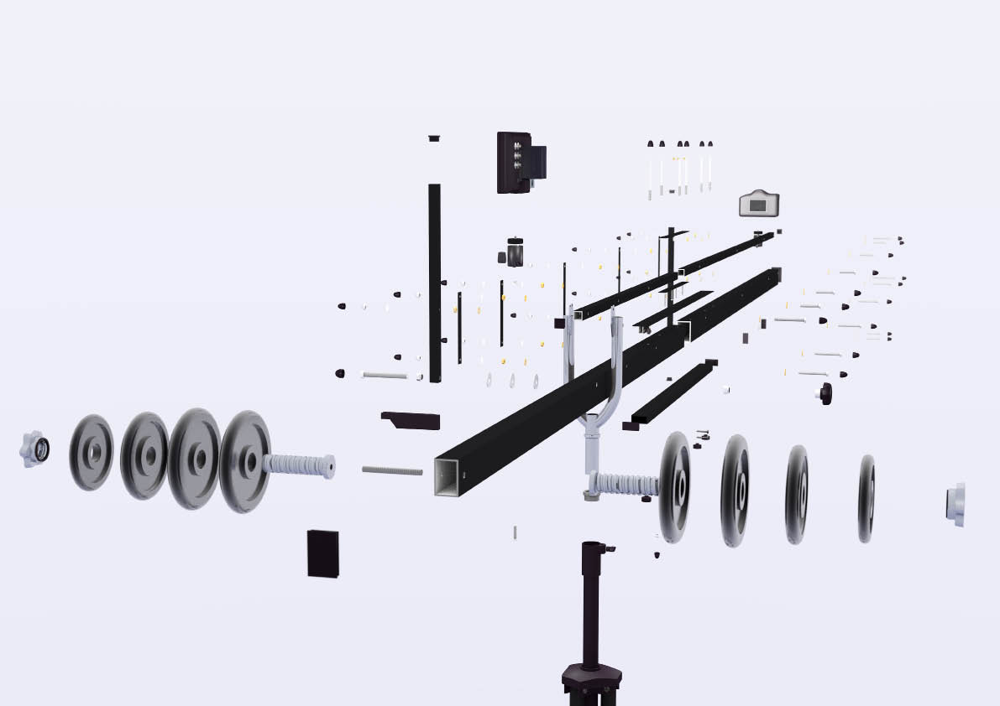 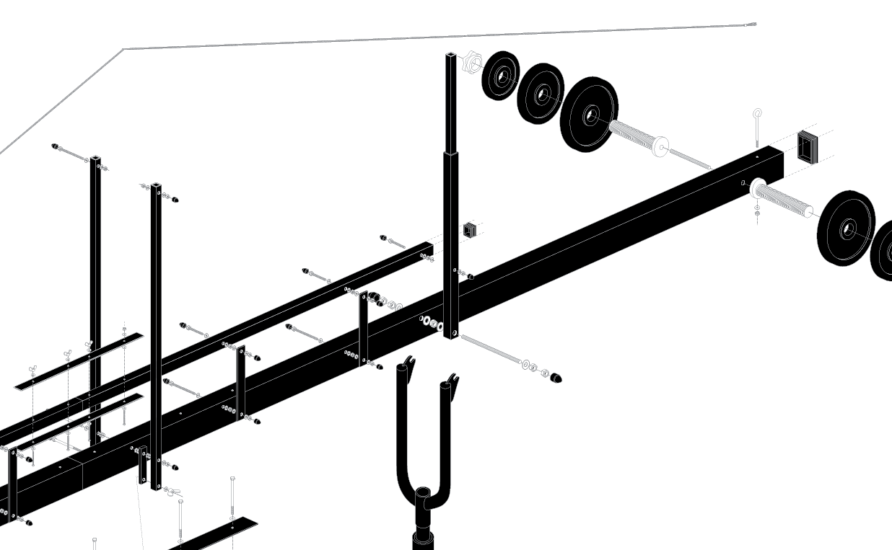 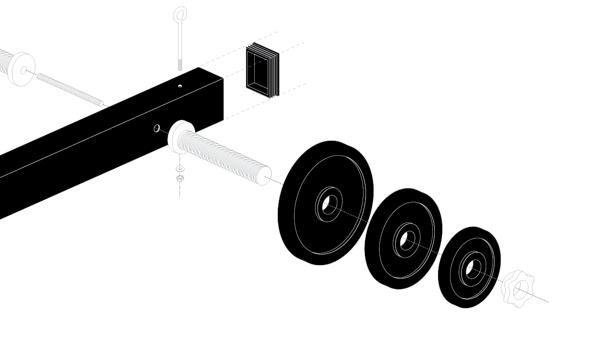 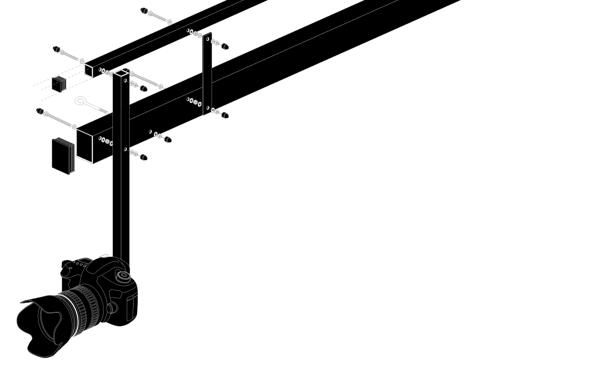
5.2 – camera stabilizer
De stabilizer is een apparaat dat de mogelijkheid biedt om alle bewegingen te nutraliseren. Een spiegelreflexcamera ofwel DLS camera is vaak erg schokgevoelig en kan met de hand bediend worden maar dan geeft het resultaat vaak een schokkend beeld. Dit apparaat is uitgerust met een gimbal, een draaibaar gedeelte wat over drie assen kan roteren, het handvat is ook roteerbaar. Aan de onderkant van het apparaat zit een in hoogte verstelbaar contragewicht, met dezelfde weerstand als de camera, waardoor deze in balans is. De camera kan zowel naar voren als naar achteren geschoven worden om de constructie volledig in balans te brengen. Dat maakt het mogelijk om alle handbewegingen om te zetten in vloeiende bewegingen.ontwerp
Voor het ontwerp heb ik verschillende eisen gesteld aan de constructie. Deze is evenals de camerakraan mat zwart. verder is hij deels van aluminium om het gewicht van het apparaat te beperken. Het apparaat wordt met de hand vastgehouden als het gebruikt wordt, waardoor het samen met de camera er bovenop en de contragewichten eronder een zwaar geheel wordt. Wellicht kan ik in de toekomst nog een ontwerp maken wat de zwaarte van het apparaat kan ondersteunen.Het visuele effect bij het inzetten van de stabilizer
Vloeiend beeld zonder schokken. Gemakkelijk recht te houden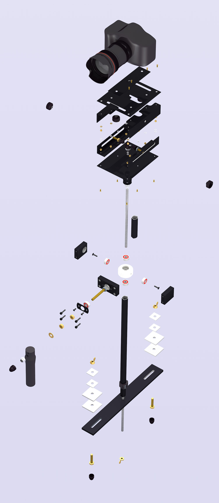 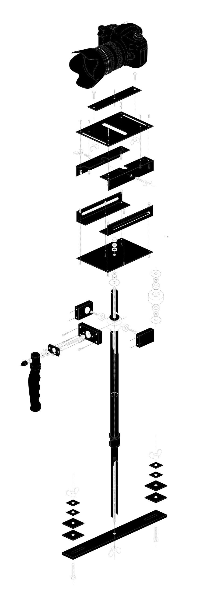
Conclusie
De conclusie van mijn onderzoek bestaat evenals de ruime vraagstelling uit een aantal verschillende elementen die samen de perceptie van de kijker beïnvloeden.Camera-bewegingen hebben verschillende functies ten aanzien van de beleving van de muziek voor de kijker, bij het kijken naar een muziekvideo. Door het bewegen van een camera verandert het beeld voortdurend van perspectief, zelfs als het subject –de muzikant(en)– niet of nauwelijks beweegt. Doordat onze ogen geprikkeld worden door beweging, zoals in hoofdstuk 3 te lezen is, kunnen we concluderen dat hierdoor de video visueel altijd interessant blijft, doordat er telkens beweging in het beeld is en er telkens iets nieuws te zien is.
De beweging van de camera kan onder andere de snelheid aangeven van de muziek, waardoor deze ervaren wordt op de manier waarop de artiest zijn muziek wil laten overkomen. De beweging van de camera gaat altijd gepaard met uitkadering van het beeld dat door de camera geregistreerd wordt, een rechthoekige uitkadering van de werkelijkheid.
In hoofdstuk 3 wordt besproken dat elementen in de muziek ze sterker worden ervaren wanneer er bewegend beeld bij is. Ook hieruit kunnen we opmaken dat beeld de perceptie van het geluid versterkt. Door meerdere camera's op te stellen op een vooraf bepaalde wijze kan er voor gezorgd worden dat alle belangrijke muzikale details in beeld zijn, waardoor de kijker de muziek sterker ervaart.
Er zijn voor live opname meerdere camera's nodig voor het in beeld brengen en dus het versterken van de perceptie van het geluid voor een kijker, doordat er bij muziek meerdere elementen gelijktijdig spelen.
Een andere belangrijke factor van camera-beweging is de snelheid van de beweging die van invloed is op de lengte van een shot. Bij langere shots is meer te zien, bij kortere natuurlijk minder.
De montage is heel bepalend voor de perceptie van de muziek, omdat hier bepaald wordt welke beelden getoond worden en voor hoe lang. Gezichten vertonen veel emotie door de muziek, en wanneer deze lang in beeld komen zal de kijker zich eerder met de muzikant identificeren, en diezelfde emotie voelen. Dit gebeurt niet als er constant een close-up van spelende vingers het scherm vult. Of ee optreden op grote afstand opgenomen wordt.
Ook wordt in de montage gekozen welke geluidsbronnen in beeld worden gebracht. Of dit alleen de zanger is, of ook de rest van de band, of misschien ook publiek.
Een andere factor die van nog grotere invloed is op de perceptie van de muziek in een muziekvideo, en waar de maker van de video geen invloed op heeft, is persoonlijke smaak van de kijker. Of deze door de muziek geraakt wordt.
Abstract
Title:
Point of ViewSubtitle:
A research about percieving music and moving-image while watching videoclipsResearch question:
How can filmtechniques enlarge the viewers' perception of the music in videoclips?For the past four years I have been making musicvideos, in particular the recording of music concerts. In this time I have recorded many performances of a broad variëty music such as classical, jazz, reggae, pop, hard rock and more. I have researched ways of filming with multiple cameras and I am developing my own style of recording performances. My goal is to make videos which can add something extra to the music, like to have an influence on how the viewer percieves the music of the video. Also this research is a step towards me perfectionizing my self-developed film-techniques for multicamera-recording. Also I will show the devices which I developed to create camera movements.
In this research I will explore the human perception, how eyes and ears function, and how these two senses function together. The second chapter is dedicated to the history and the development of the musicvideo through the years. A large part of this thesis is dedicated to camera-movement, film-cuts, framing an image and very important the dimension of time within the music and thus in the video. How we deal with film-cuts and how our ears can influence what we see, and our eyes influence what we hear.
In the fourth chapter I will explain my own development by going deeper into 6 videos (experiments), of which I will describe the different elements of a the video such as; number of cameras and positioning, diversity in cameramovement, the editing proces, timing and planning, knowing the music, framing the image. Step by step the reader of the thesis will explore the elements of musicvideo. The video experiments can found on the dvd in the back of this thesis.
The last chapter will show the camera devices which I developed. To bring a diversity in camera movements. There is a camera-crane, a steady-cam and a camera-motion-device based on the construction of a leg of a 'Strandbeest' by Theo Jansen. These devices will be explained for their functions, and you will find the blueprints and 3d animations of the crane and the steadycam. My research in the near future will explain in 3d animation how the devices are to be used. But not in this thesis, this will be in an update.
The conclustion I found was that the awnser to the research question exists out of many factors. At first –most important– showing the actual instrument which produces the sound, then the diversity of the moving image to keep the viewer visually stimulated, then comes diversity in cameramovements. I hope the reader enjoys reading this thesis and watching the videos which are the guide in the study.
Bronnen
studies / artikelen
The impact of visual stimuli on music perception – Ben Field, 2009(http://www.jstor.org/discover/10.1525/mp.2009.27.1.43?uid=3738736&uid=2&uid=4&sid=21105673192353)
Seeing music performance – William F. Thompson, Phil Graham, Frank A. Russo, 2005
(http://eprints.qut.edu.au/26430/)
Musical structure and Psychophysiological respons – Patrick Gomez, Brigitta Danuser, 2007
(http://psycnet.apa.org/journals/emo/7/2/377/)
Emotional Impact of musical/visual synchrony variation in film – Andrew and Gibson Rogers, 2012 (http://eprints.hud.ac.uk/14946/)
Psychomusicology – Valerie J. Bolivar, Anabel J. Cohen, John C. Fentress, 1994
(http://www.upei.ca/%257emusicog/research/docs/psychomusicology_v13_p28-59.pdf)
Nature Review | Neuroscience Volume 5, march 2004: The role of fixational eye movements in visual perception, p. 229–239
Eye guidance in Reading and Scene perception, Chapter 12: Eyemovement during Scene Viewing, – John M. Henderson, Andrew Hollingworth, Michigan State University, 1998, p. 269–291
Eye guidance in Reading and Scene perception. Chapter 16 Film prerception: The processing of film cuts – Géry d'Ydewalle, Geert Desmet, Johan van Rensbergen, University of Leuven, 1998, p. 357–367
Boeken
The soundscape – R. Murray Shafer, Destiny Books, Vermont 1977.Shot by shot – A practical guide to filmmaking – John Cantine, Susan Howard, Brandy Lewis, 1995
Film Directing Shot by Shot: Visualizing from Concept to Screen – Michael Wiese Productions, 1991
Films Maken – Roemer Lievaart, Dramaprodukties Amsterdam 2009
Sensation and Perception: Chapter 3: How are senses a like? And how are they different?
Chapter 9: Shedding light on the eye, Chapter 10 Hearing and other senses, E. Bruce Goldstein, Cengage Learning, 2009
Documentaire / Film
Way of seeing – Burger - 1972Final Cut: The Making and Unmaking of Heaven's Gate
The Cutting Edge: The Magic of Movie Editing
Fellini: I'm a Born Liar (2002)
foto's en afbeeldingen:
Pieter Bruegel de Oude – KinderspelenAdolf Friedrich Erdmann – 'Concert Friedrichs des Grossen'
Illustraties, foto's, video's en animaties door René Louter